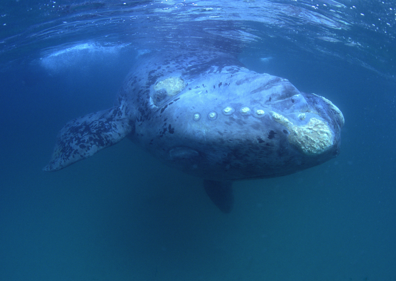
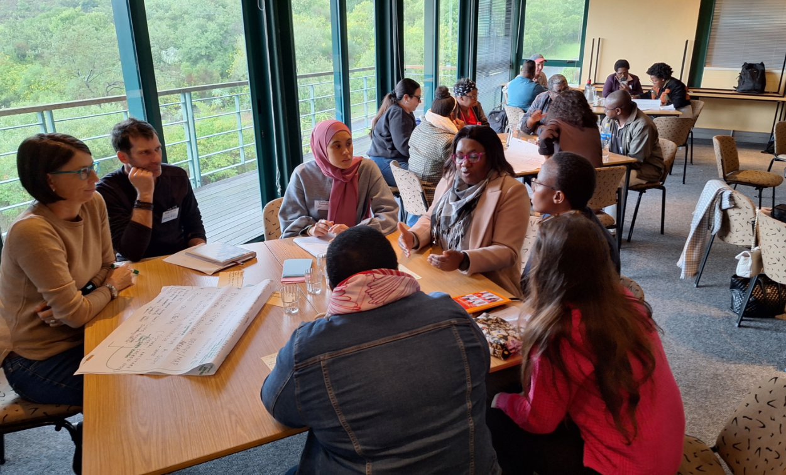
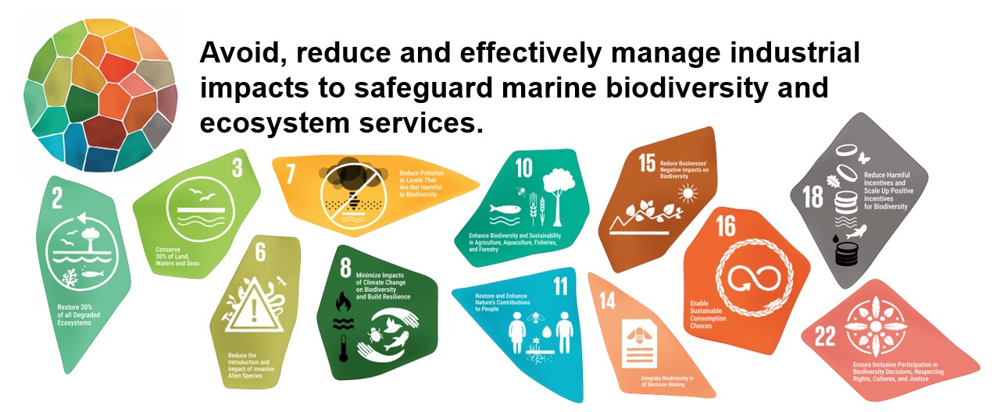

![]()
The 2025 National Biodiversity Assessment identified key marine ecosystems, species and benefits at risk, and knowledge gaps limiting the assessment. Priority actions to safeguard ocean life and livelihoods were co-developed in collaboration with knowledge holders and decision makers. Advancing these priority actions can help to improve the state of marine biodiversity and maintain its many benefits to South Africans.

Research progress and priorities
During the 2025 assessment of threat status and protection level of marine ecosystems and species, many research gaps that limit the assessment of marine biodiversity emerged. Knowledge gaps identified in the 2018 assessment1 were also revisited and progress against these were briefly evaluated to identify persistent knowledge gaps.
Persistent knowledge gaps and research priorities span foundational marine biodiversity research at the ecosystem, species and genetic level, to applied research for improving our understanding of the impacts of key pressures on ecological condition. New research priorities include the need for increased social science in the marine realm particularly to track progress in more equitable marine protection (ecosystem protection level page).

Foundational biodiversity research
Key areas of progress in foundational biodiversity research for species (Box 1) and ecosystems, include progress in taxonomic knowledge of species and new and improved species distribution knowledge for informing a more data-driven national marine ecosystem map. Gaps remain in systematic genetic barcoding and analyses linked to analyses of seabed and fish fauna imagery and mapping of marine ecosystems and species. Innovative artificial intelligence methodologies can assist in processing large datasets, unlocking these for inclusion in analyses that improve the national marine ecosystem map.
South Africa has made progress in adopting the four Kunming-Montreal Global Biodiversity Framework genetic indicators, however marine invertebrate taxa are still neglected
A new field guide entitled Southern African Sea Slugs was published at the end of 2023 and represents a comprehensive update of our knowledge of the opisthobranch fauna. The most recent previous publication for this group was Nudibranchs of Southern Africa, which was published in 1987, covered 268 species. By 2023, a further 600 species had been observed with scuba divers playing a major role in documenting new records. The sheer range and diversity of species included in the guide are a testament to the astonishing biodiversity of the region and also to the diverse community of scientists, photographers, artists and citizen scientists who worked together to create the book. Thousands of field observations were collated to give the most accurate picture of species’ size, geographical and depth ranges and life histories known to date.

Other research priorities include work on important marine ecosystem engineers, marine invertebrates that are sensitive to water quality changes and other indicator taxa. South Africa’s Marine Taxonomy Working group identified several national priorities to address the critical shortfall in marine taxonomic research and capacity.
Little progress has been made on IUCN redlisting of marine species and no progress has been made in terms of evaluating species protection levels in the marine realm although research to evaluate potential increases in protection level of the African penguin is underway. Research is needed to comprehensively assess species taxon groups using the IUCN Red List criteria and improve current knowledge on the state of South Africa’s marine species.
Progress has been made in developing standardised monitoring approaches for early detection of marine invasive alien species2 but gaps remain in establishing rapid response mechanisms once species are detected.
Recommendations to strengthen taxonomic research in South Africa as identified by the marine taxonomy working group. Accurate taxonomy published in the peer reviewed literature can support global recognition for South Africa’s exceptional marine biodiversity.
Research priorities
Ongoing challenges in assessing marine species, genetic biodiversity and ecosystems include the crises in taxonomy and a poor understanding of species distribution data (Table 1). Innovative and integrated methods that can help address these gaps include imaging approaches, molecular methods, digital taxonomy, active and passive acoustics, citizen science and the strategic connection of biodiversity databases (Rogers et al, 2022). Progress in these complementary areas can increase our understanding of species distribution and feed into improved marine biodiversity assessment at all levels (genetic, species and ecosystems) and multiple scales. Foundational data gaps and capacity constraints limit the IUCN Red List assessment (extinction risk) of marine species. Although dedicated marine species red listing support has been recognised as a key need since 2008 (Sink et al. 2019 chapter 11 prev NBA), there has been no progress in securing resources or capacity to advance this work (Subramoney et al. 2024).
South Africa has made progress in adopting the four Kunming-Montreal Global Biodiversity Framework genetic indicators, however marine invertebrate taxa are still neglected. A national genetics monitoring framework is still lacking and the integration of genetic/genomic data into marine spatial plans.
Challenges in measuring ecosystem condition and developing agreed thresholds of collapse for different ecosystem functional groups include capacity gaps, data and monitoring gaps and conceptual challenges with the need to apply a greater diversity of indicators to this end.
Groundtruthing ecosystem types remains crucial for ongoing improvement of their descriptions and delineations. For example, the marine realm uses techniques such as remote operated vehicle surveys and seabed sampling (e.g. by grab samples, research trawls and sleds) to collect information on biotic components of ecosystem types; while abiotic data like bathymetry, water turbidity, productivity data and sediments also contribute to ecosystem classification. Progress in work to strengthen the classification and delineation of marine ecosystem types is detailed on the Marine Ecosystem types page.
A comprehensive list of research priorities that could advance the assessment of South Africa’s biodiversity can be found here: XXX Megan wants to Lets make a clear list for download. Something that funders can put forward in calls
Priority actions for improving the state of marine biodiversity
Drawing from the key findings of NBA 2025, several priority actions were co-developed to improve the state of marine biodiversity in South Africa (Sink et al. 2023, Rylands et al. 2025, van der Bank et al. 2025). More than 80 individual actions were co-developed and classified into ten broad thematic areas with more detailed recommended steps and potential indicators of progress for each action. These are not comprehensive, prescriptive or time bound but include specific and measurable elements, where possible, to more easily track progress. Each of the 10 actions were linked to relevant Kunming-Montreal Global Biodiversity Framework (GBF) targets (Box 3) to easily inform ongoing policy processes. The marine assessment team will evaluate progress for these recommended steps in future assessments.

The Kunming-Montreal Global Biodiversity Framework (GBF) is a global agreement under the Convention of Biological Diversity (CBD), which South Africa has formally committed to. The framework has four goals and 23 targets for protecting, conserving and restoring biodiversity. South Africa is in the process of domesticating the GBF targets and aligning its national strategies to achieve these ambitious targets.
Whilst aimed at improving biodiversity, the framework elevates the importance of indigenous, peoples and local communities, and seeks to enhance the role this important stakeholder group plays in protecting and managing biodiversity now and in further. Further details are available in the 2030 targets.

Enable meaningful participation and influence in decision-making for ocean planning, assessment and management to support a whole-of-society approach for effective ocean governance. This can be advanced through robust inter-disciplinary methodologies and inclusive stakeholder dialogue (including civil society and indigenous people and local communities), strengthening capacity and social practice across institutions and innovations in community and industry partnerships.
Key messages C1, B4
Read more »
Potential indicators of progress could include:
New or strengthened fora, collectives and platforms are established or revived through which government institutions can actively engage communities, civil society, industry and non-profit organisations with a focus on indigenous peoples, women and youth, heritage institutions, small-scale fishers, traditional leaders, traditional healers, and other traditional and local knowledge holders on matters related to ocean planning, management, development and decision-making. The Offshore Environment Forum could be re-convened with strengthened participation from shipping and heritage.
Indigenous knowledge working groups are established with co-developed guidelines and outputs that support the recognition and inclusion of indigenous knowledge in marine biodiversity assessment, planning and decision-making. Identify and establish mechanisms for integrating Indigenous knowledge into existing and new management plans, actions, and policies and other outputs and outcomes related to planning, management, and decision-making.
National and local small-scale fisheries priority areas maps are developed and validated through processes that prioritise and actively involve indigenous people and small-scale fishing communities to represent the spatial interests of this vulnerable sector in national ocean planning and decision-making processes.
There is an increase in the number of Marine Protected Areas (MPAs) with active and representative local stakeholder fora. In 2025 only x (%) of South Africa’s MPAs have active MPA fora, advisory groups or Protected Area Advisory Committees (PAACs).
There is financial and logistical support to enable meaningful participation of previously marginalised small-scale fishing coastal communities and knowledge holders in participatory processes and the formats, venue and language used support active participation.


Avoid, reduce and manage industrial impacts from maritime sectors through strategic mainstreaming within key production sectors, effective Marine Spatial Planning, strengthened mitigation and restoration and increased incentives . (key messages A2, A3, A4, B5)
Read more »
Potential indicators of progress can include:
Critical Biodiversity Areas and Sea-Use guidelines are mainstreamed within key production sectors and included in screening tools used for Environmental Impact Assessments.
The location of new ports and harbours are carefully considered, avoid critical biodiversity areas and implemented with effective mitigation measures.
Resources and research capacity for improved understanding of underwater noise impacts and cumulative impacts on marine biodiversity are leveraged, so that these impacts are better accounted for in biodiversity assessments, Marine Spatial Planning, mining authorizations and protected area management.
Innovative finance tools in South Africa are piloted to demonstrate how industrial sectors can fund marine conservation rehabilitation/ restoration (e.g., marine biodiversity offsets, polluter pay).
The Ballast Water Act, which has been in Bill form since 2013, is promulgated by South Africa and implemented with the associated regulations and compliance systems.
New marine mainstreaming initiatives are developed and implemented to reduce pollution (including underwater noise), seabed and shore damage and impacts on threatened marine species. These could include scaled-up incentives for sustainable use and conservation through eco-certification and other mechanisms.
Industrial impacts in MPAs are reduced and conservation expansion efforts are contributing to the protection of traditional fishing grounds and marine resources and reduced conflict between sectors.


Improve marine protection through more diverse and inclusive conservation models, inter-disciplinary approaches, improved social process and innovative finance, progress in co-management, restorative action and steps to address critical capacity shortfalls. Persistent barriers to effective protection must be overcome and key lessons in this process should be applied in future expansion efforts. (key messages B4, C1, C3)
Read more »
Potential indicators of progress could include:
Organisations tasked with design, implementation and management of marine protected and conserved areas and spatial fisheries management have capacity for social science research, social learning facilitation and community development.
Clear and specific gazetted MPA objectives that encompass both biodiversity conservation, cultural heritage and socio-economic considerations are established through retrospective reviews for MPAs lacking clear purposes.
Outdated MPA regulations are reviewed and updated to align with current conservation and management objectives and align with newer regulations.
A formal definition, common understanding, and practical framework for “co-management” in an MPA-specific context is co-developed and harmonised with co-existing contexts (e.g., Fisheries).
Small-scale fishing zones are co-designed and implemented and explored for recognition as Other Effective Area-Based Conservation Measures (OECMs) with leadership from small-scale fishers. This could provide protection to fishers’ tenure rights and livelihoods whilst safeguarding vulnerable fishers, marine ecosystems and cultural heritage.
Other new spatial measures to conserve natural and cultural heritage are piloted and evaluated for recognition as OECMs.
Innovative sustainable finance mechanisms to support long-term comprehensive operational funding for MPAs are piloted.
Local stewardship by indigenous people, youth and local communities is actively promoted, incentivised and enabled.
Capacity for collaborative monitoring, surveillance and compliance in and around MPAs is improved through adequate funding, new partnerships (including community collaborations) and innovative technology.
Offshore protection levels are improved, in particular for slope ecosystem types.
The spatial protection of threatened sharks and rays, seabreams and kobs (genus Argyrosomus) is improved, especially within vulnerable aggregation sites, nursery areas and bycatch hotspots.
New paths, initiatives and partnerships provide socio-economic benefits to coastal communities adjacent to existing and new marine and coastal conservation areas to offset foregone opportunity costs, particularly for those most vulnerable.
Priority geographic areas for safeguarding biodiversity
South Africa’s biodiversity is not evenly distributed across the seascape and when this is combined with limited resources for action, spatial prioritisation becomes essential. An important feature of South Africa’s biodiversity-related action to the pressures on biodiversity has been spatial planning to identify priority areas in the seascape for intervention. The NBA provides an initial portfolio of spatial priorities by highlighting the location of the most threatened ecosystems and species and by intersecting the results of ecosystem threat status and protection level. However, it is not only threatened biodiversity that needs attention; often there are strategic gains to be made from focusing on areas that are still in good ecological condition and where there are relatively easy opportunities for protection or effective management.
Critical Biodiversity Areas (CBAs)
SANBI, in collaboration with its partners, is responsible for the identification of Critical Biodiversity Areas (CBAs) across all realms (von Staden et al. 2022). CBA mapping is achieved through the application of systematic conservation planning to identify areas that are in a natural/near-natural state that represent opportunities where biodiversity management action can be most impactful. CBA Maps are the biodiversity sector’s input into decisions on appropriate land and sea uses to safeguard a sufficient, representative sample of biodiversity that can persist into the future, in support of sustainable economic development and to meet international environmental commitments. Spatial biodiversity priority areas (link to CBA map) to protect, restore and recover marine ecosystems and species have been identified, and are being improved with increased stakeholder dialogue, collaboration, and technical innovation.
Ecologically or Biologically Significant Marine Areas (EBSA)
In the marine realm, South Africa also has a network of Ecologically or Biologically Significant Marine Areas (EBSAs) that were adopted by the CBD in 2014 at the 12th Convention of Parties. Initially, EBSAs were conceptualised to be a tool by which MPAs might be identified and established in the high seas; however, their value within national jurisdiction, and for helping countries to achieve their Aichi targets, soon became apparent. Through a series of regional workshops, EBSAs were identified by evaluating sites against seven criteria, and were delineated within country Exclusive Economic Zones (EEZs), in the high seas, and in transboundary (country-country, or country-high seas) areas.
Approach
Knowledge gaps
Knowledge gaps and research priorities were identified throughout the NBA 2025, but also through a systematic review of progress against research priorities identified in the NBA 2018.
Priority actions
Drawing from the key findings of this assessment, more than 80 priority actions were co-developed to improve the condition of marine ecosystems and species, and to safeguard the many benefits they provide. To inform these actions, a series of science–policy-society engagements were held, bringing together researchers, decision-makers, civil society and knowledge holders (with a particular focus on coastal communities) to review research evidence and jointly co-develop recommendations to address key findings, identified risks and key pressures on South Africa’s marine biodiversity (Sink et al. 2023, Rylands et al. 2025, van der Bank et al. 2025). From the more than 80 specific actions, a set of 10 overarching priority actions were distilled with recommended indicators of progress that point to a range of sub-actions which if implemented could improve the state of marine biodiversity in South Africa.
Priority areas
South Africa has several established spatial prioritisation tools for informing the work of the biodiversity sector. Principle among these are
the National Protected Area Expansion Strategy (NPAES),
Spatial biodiversity plans, which provide maps of Critical Biodiversity Areas (CBAs) and Ecological Support Areas (ESAs), together called Critical Biodiversity Area or CBA Maps.
Ecologically or Biologically Significant Marine Areas (EBSAs)
Together these tools provide a comprehensive set of biodiversity priority areas that collectively meet biodiversity targets for ecosystems, species and ecological processes. Increasingly, critical ecological infrastructure assets are also included in this set of biodiversity priority areas. Maps of biodiversity priority areas directly support the implementation of the National Biodiversity Strategy and Action Plan (NBSAP).
Maps of CBAs and ESAs, referred to as CBA maps, are produced by all provincial conservation authorities, marine planners and some metropolitan municipalities and are based on the principles of systematic biodiversity planning. They are a form of strategic planning for the natural environment, identifying a set of geographic areas that provide a spatial plan for ecological sustainability at the landscape and seascape scale. A CBA Map comprises five map categories: Protected Areas (PAs), Critical Biodiversity Areas (CBAs), Ecological Support Areas (ESAs), Other Natural Areas (ONAs) and areas where there is No Natural habitat Remaining (NNR). Guidelines published by SANBI (SANBI 2017) encourage consistency between the CBAs prepared by different agencies.
Protected areas, CBAs and ESAs together form a network of natural and semi-natural areas that enable ecologically functional seascapes and landscapes in the long term, designed to be spatially efficient and to avoid conflict with non-compatible land and ocean uses wherever possible. CBAs should be kept in a natural or near natural state to support ecological sustainability of the landscape and seascape. ESAs do not need to be entirely natural, but should be kept at least semi-natural so that they retain their ecological processes. These natural and semi-natural areas can co-exist in a matrix of multiple uses, including fisheries, aquaculture, mining, ports and others.
Land-based CBA Maps have been produced for over a decade, while the first map of CBAs and ESAs for the coast and ocean was completed in 2019 (Sink et al. 2019 chapter 11). Since 2019, data collation and analyses have improved with the last published version of the CBA map produced in 2022 (check).
Acknowledgements
Sincere thanks to the more than 123 individuals who actively participated in the three engagements held to co-develop priority actions for improved Ecosystem Based Management in South Africa. In addition, SANBI appreciates further inputs from the SeaPeople collective, staff from DFFE Oceans and Coasts and Fisheries Branches, SANParks and provincial conservation entities. We acknowledge the National Research Foundation particularly projects funded through the Foundational Biodiversity Information Program (FBIP) and the African Coelacanth Ecosystem Program (ACEP). These include the SAEON led SeaMap project (Grant number 138572), Deep Connections (Grant number 129216), Agulhas Bank Connections (Grant number 129213) and Sound Seas projects (Ref number ACEP23040790163). This work was support through international projects funded by the European Union’s Horizon 2020 Research and Innovation Program under Grant Agreement No. 862428 (Mission Atlantic project) and 818123 (iAtlantic project), the German Federal Ministry for Economic Cooperation and Development (BMZ) through the Deutsche Gesellschaft für Internationale Zusammenarbeit (GIZ) GmbH for the MeerWissen CoastWise project, and the UK Research and Innovation (UKRI) through the Global Challenges Research Fund (GCRF), Grant ref: NE/S008950/1, for the One Ocean Hub project.
Technical documentation
Key publications
Rylands S, et. al. 2025. Co-developing Management and Policy Actions in Support of Improved Marine Biodiversity in South Africa. Science to Policy Workshop Report and Draft Priority Actions for the 2025 National Biodiversity Assessment. Cape Town, South Africa. 22 pp.
Sink KJ, et. al. 2019. Chapter 11: Key findings, priority actions and knowledge gaps. In: Sink KJ, van der Bank MG, Majiedt PA, Harris LR, Atkinson LJ, Kirkman SP, Karenyi N (eds). 2019. South African National Biodiversity Assessment 2018 Technical Report Volume 4: Marine Realm. South African National Biodiversity Institute, Pretoria. South Africa. http://hdl.handle.net/20.500.12143/6372
Sink K, et. al. 2023. Advancing Marine Ecosystem Based Management at the Science Policy Society Interface. A report from a science-policy workshop, Kirstenbosch, August 2023. 26pp.
Subramoney A-C, et. al. 2024. Planning for Marine Invertebrate Species Red Listing in South Africa. November 2024. SANBI, Cape Town. 41pp.
van der Bank MG, et. al. 2025. SeaPeople: Building trust and relationships for improved participatory planning, protection, and management in South Africa’s marine environment. May 2025 Workshop Report, SANBI, Cape Town.
Recommended citation
Sink, K.J., Van der Bank, M.G., Majiedt, P., Currie, J.C., Dunga, L.V., Farthing, M.W., Kirkman, S.P., Atkinson, L.J., Porri, F., Kock, A.A., Shibe, S.S., Mwicigi, J., Smith, K., Malatji, M., Karenyi, N., Henriques, R., Oosthuizen, A., Mzimela, N.Z., Besseling, N.A., Rylands, S., Layne, T., Oliver, J., Adams, L.A., Van Niekerk, L., & Harris, L.R. 2025. Knowledge gaps, priority actions and priority areas: Marine realm. National Biodiversity Assessment 2025. South African National Biodiversity Institute. http://nba.sanbi.org.za/.